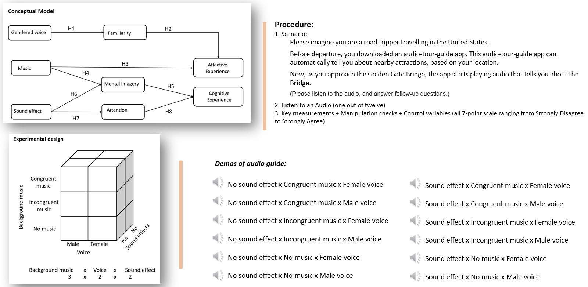

Research
Chen, J., Lehto, X., Lehto, M., & Day, J.
Long story short：
Sedentary lifestyles are on the rise globally. The World Health Organization has identified the lack of physical excise as an urgent global wellness issue to be addressed. Encouraging people to participate in moderate-intensity physical activity consequently has become a public health priority. Against these backgrounds, our study conducted an experiment to investigate how to nudge people to walk. The fundamental proposition is that making small changes to the built environment and social environment will promote people’s walking desire. More specifically, we assume increasing the salience of sidewalks by painting them in colors can increase people's walking interest, by grabbing their attention to the walkways and triggering their positive emotions to participate into the walking activity. To study this proposition, one part of our experiment compared people's walking interests when sidewalks are colored and uncolored. In addition, we explored the effect of priming on people's choices and behaviors. Specifically, we wanted to know whether priming people by first letting them see walking shoes plays a role in nudging them to walk. In this second layer of our experiment, we compared participants' walking interest between those who are primed and those who are not primed with walking shoes. Third, this study also considered the effects of social norms on people's walking behavior. That is, we further compared people's interest in walking when social norms are absent or present. We aim to increase public awareness of welling being and call for an increased level of physical activity as a society.
Work:
- Designed a 3 x 3 x 2 full-factorial between-subject online experiment
- Designed a main scenario and several sub-scenarios for each experiment
- Designed scales to measure key dependent variables and control variables
- Developed questionnaires for participants’ responses and feedback
- Implemented quality control for data collection
- Recruited 2,160 online participants
- Responded to emails relating to participants' questions
- Conducted manipulation check
- Conducted Three-Way ANOVA analysis
- Conducted Multivariate analysis of variance (MANOVA)
- Conducted a series of one-way ANOVA
- Conducted post hoc test
- Conducted Ordinary Linear Regression analysis
- Conducted Mediation Analysis
- Summarized research data into tables, graphs and narratives
- Explained research and research results to the public
- Gave talks in conferences and workshops
- Improved pedestrian experience (attitudes, interest, and emotions) of walking by 5%
Research clips:
(Experiment)
 (Data Analysis)
(Data Analysis)

Chen, J. &
Lehto,
X.
28th Annual Graduate Research Conference in Hospitality and Tourism, Pomona, CA, USA (pp.59).
Goals:
- To discover users' need in listening to audios during road self-drive tour
- To reduce users' cognitive load by providing schema congruent information
- To recommend practices to travel-audio-guide designers
Work:
- Reviewed industry reports, competing products and their users' feedbacks
- Conducted comparative analysis
- Discussed with subject matter experts
- Developed persona hypotheses
- Identified potential users (Notes: drive while listening, self-drive tourists, drive for long time, have the habits of listening to audios)
- Created screening questions to select appropriate and diverse participants
- Created open-ended and close-ended questions to guide interviews
- Interviewed 27 participants, in person, by telephone, and by online meetings
- Performed qualitative data analysis, including cleaning data, open coding, axial coding, selective coding, and thematic analysis
- Identified users' behavior patterns, and goals
- Constructed a set of personas that represent the diversity of observed behavior patterns, motivations, and activity flows
- Composed reports

Chen, J. & Lehto, X.
Goals:
Work:
- Reviewed literature in multiple databases
- Proposed clear, testable, and specific hypotheses
- Developed demos of sounds for audio guides
- Created 12 types of audio guides to test different design factors
- Designed survey for participants’ responses and feedback
Research clips:

Davari,
D.,
Chen, J., & Lehto,
X.
25th Annual Graduate Research Conference in Hospitality and Tourism, Las Vegas, USA (pp.238, #264).
Goals:
To discover ways to enhance people's experience of attending an academic conference
To recommend actions and practices to conference designers.
Work:
- Created leisure-orineted activities for academic conferences
- Designed scale and questionnaires to measure the experience of each leisure-oriented activity
- Recruited 73 participants
- Collected data on Qualtrics
- Conducted descriptive statistics
- Conducted t-tests
- Conducted Factor Analysis
- Created graphs and and tables to demonstrate data analysis results
- Composed reports on the study results and explained actions to conference organizers
- Gave talks to the public in conferences and workshops
Research clips:

Chen, J. &
Day,
J.
25th Annual Graduate Research Conference in Hospitality and Tourism, Las Vegas, USA (pp.229, #255).
Goals:
To explore if people's cultural background (i.e., individualistic and collectivistic cultural values) influence their pro-environmental behaviors
To explore if Baby Bommers, Generation X and Millennials behave differently in environmental protection
To provide strategies to better engage people with diversity in implementing green practices
Work:

Lehto, X. Y., Chen, J., & Le, U. (2020).
Goals:
- To provid an overview of the family tourism research landscape
- To discover missing links and future research opportunities in family tourism
- To recommend actions and practices to travel services that are family-oriented
Work:
- Conducted a thorough research in multiple databases to collect information
- Conducted Content Anlysis over a total of 159 published articles
- Constructed a database with information categories for all articles
- Visualized collaboration networks with CiteSpace
- Co-authored the published paper